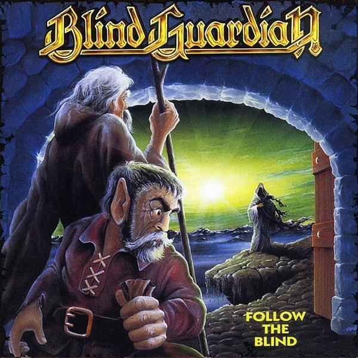

Helloween primeira formação com Michael Kiske (vocais)
Kai Hansen (guitarra)
Michael Weikath (guitarra)
Markus Grosskopf (baixo)
Ingo Schwichtenberg (bateria)
Começou no Helloween tocando guitarra e cantando, porém com a sobrecarga de trabalho, ficou apenas com a guitarra deixando os vocais para o então jovem Michael Kiske, que grava os Keeper of the Seven Keys Part I e Part II. Grava o disco ao vivo Live in the U.K. e logo depois sai da banda alegando as enormes turnês.
Gamma Ray com Kai Hansen (vocais e guitarra) Ralf Scheepers (vocais), Uwe Wessel (baixo) and Matthias Burchardt (bateria)
No início dos anos 1990 cria o Gamma Ray, que é um trabalho de seqüência do que ele estava fazendo no Helloween. Por essa banda passaram grandes nomes do metal germânico como Ralf Scheepers, Uli Kusch e Mike Terrana.

Follow the Blind
Chamado para ajudar na produção desse album magnifico do Blind Guardian, Kai Hansen participa de uma das principais músicas da banda Valhalla.
Edu Falaschi e Kai Hansen (penteado feat. Ana Maria) Participação em show da Banda Angra, cantando The temple of Hate.